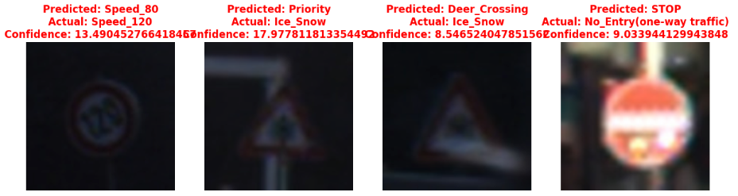

Introduction & Overview
Traffic sign recognition is a core computer vision task where accurate classification across dozens of categories is critical, yet traditional Convolutional Neural Networks (CNNs) can struggle with global context. Because standard convolutions rely on localized receptive fields built up layer by layer, capturing relationships between distant regions of an image—such as how outer border colors, overall geometric sign shapes, or surrounding visual cues relate to internal symbols—can be less direct than with attention-based mechanisms. To address this, this project combines a Vision Transformer backbone (mobilevit_xs) with a custom Spatial Transformer Network (ParametricSTN) and targeted training techniques to classify 43 traffic sign categories.
Methods
Model Choice & Architecture
- Hybrid Architecture (
HybridTrafficSignModel): Pairs a customParametricSTNfront-end with a pretrainedmobilevit_xsbackbone (configured for 43 classes viatimm), allowing input images to be adaptively transformed before transformer-based visual processing. - Spatial Transformer Network (
ParametricSTN): Uses a lightweight CNN localization network (loc_net) with convolutional, ReLU, max-pooling, and fully connected layers to predict three parameters—rotation, scale, and brightness—initialized near an identity transform (rot=0, scale=1, brightness=0). It builds a 2×3 affine warp grid (F.affine_gridandF.grid_sample) for spatial alignment and applies brightness adjustments across the batch.
Training Design
- Data Augmentation & Preprocessing: Training images (
224×224target size, batch size 32) undergo resizing to256×256, random cropping, random rotation (±15°), color jittering (brightness and contrast), tensor conversion, and ImageNet normalization (mean=[0.485, 0.456, 0.406],std=[0.229, 0.224, 0.225]), accompanied by a visualization utility (audit_augmentations) to inspect augmentation variations. Validation/test images use strictly deterministic resizing and normalization (test_transform). - Staged Training & Optimization: Trained with
CrossEntropyLoss,Adam, and gradient clipping (max_norm=1.0) across three stages:- Phase 1: Trains only the
mobilevit_xsbackbone (lr=1e-4,apply_stn=False) for 6 epochs and saves weights. - Phase 2: Freezes the ViT backbone and trains only the
ParametricSTN(lr=1e-4,apply_stn=True) for 2 epochs. - Phase 3: Unfreezes all parameters for end-to-end fine-tuning at a lower learning rate (
lr=1e-5,apply_stn=True) for 2 epochs.
- Phase 1: Trains only the
Holdout Separation & Preventing Data Leakage
- Training data is organized into a dedicated
trainingdirectory (merged fromtraining1andtraining2) loaded withshuffle=True, while evaluation uses a separateholdoutdirectory (alongsidemini_holdout/mini_holdout_answers.csvreferences in the notebook) withshuffle=Falseandtorch.no_grad(). - Keeping the holdout images separate from the
trainingpipeline and applying only non-random preprocessing (test_transform) during evaluation—rather than training augmentations or tuning on holdout data—prevents data leakage and ensures evaluation reflects performance on unseen images.
Results
The model achieved 98% accuracy (reported as 98.01% in the evaluation output) on image recognition, and on the holdout dataset it misclassified only 4 images out of 12,629 total images.

Read the orbital dynamics project or return to the project overview.